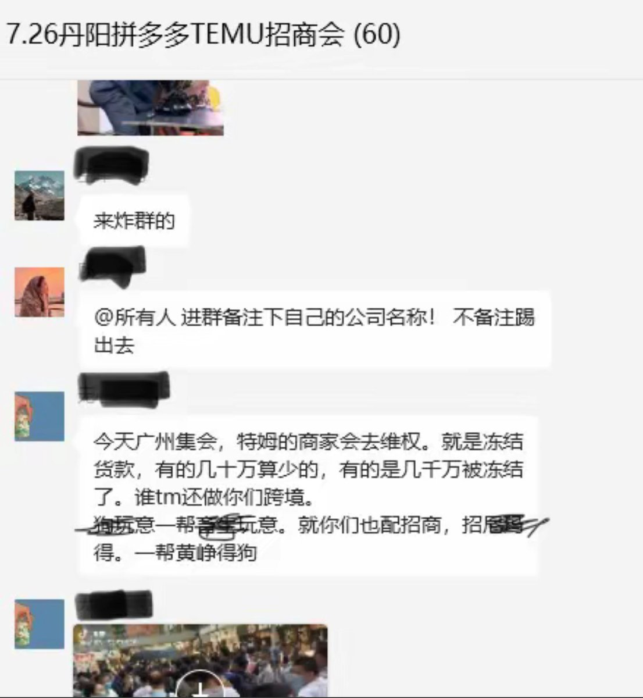

Minokakay（日雌泰补色诺
@Minokakay
RT @whyyoutouzhele: 7月21-22日，广东广州。网曝temu海外版拼多多无故扣罚商家，有商家被罚了几百万，上百名商家来到广州总部维权讨说法。

李老师不是你老师
@whyyoutouzhele
7月21-22日，广东广州。网曝temu海外版拼多多无故扣罚商家，有商家被罚了几百万，上百名商家来到广州总部维权讨说法。 https://t.co/F2u2SveQU1